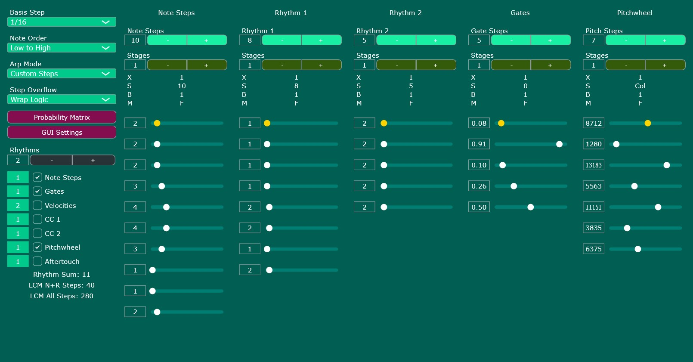
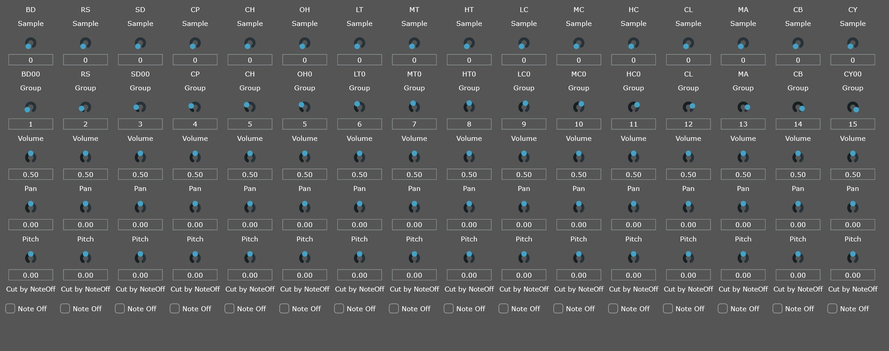
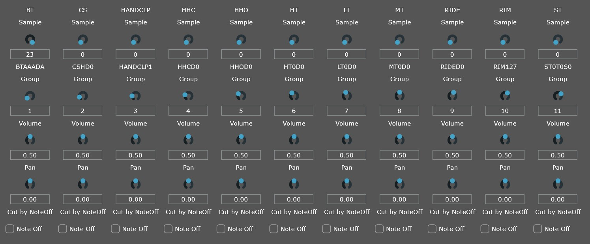

Polyrhythmic Arpeggiator
Generate complex, evolving patterns with independent rhythmic layers. Perfect for creating hypnotic sequences and generative textures.
Download
Generate complex, evolving patterns with independent rhythmic layers. Perfect for creating hypnotic sequences and generative textures.
Download
A sample player built around the iconic TR-808 drum machine sounds. Load, layer, and shape classic 808 samples with ease.
Download
A sample player built around the legendary TR-909 drum machine. Punchy kicks, crisp hats, and snappy snares at your fingertips.
DownloadI'm based in Leipzig, Germany, and create code as a hobby. If you have questions, want to report bugs or just have a chat, you can contact me at thhaaudio(at)gmail.com